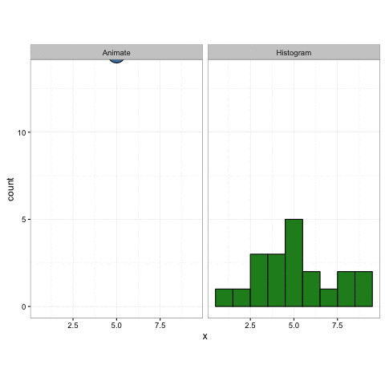
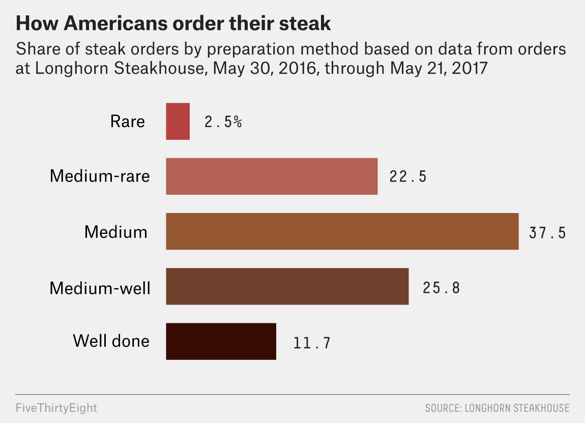

Samuel Burer
August 2022

Source: gist.github.com
To create a histogram in Excel, use a PivotTable with bar chart
Example: Excel file homes.xlsx
Often will need to group data into bins manually
To force the display of empty bins, first click a cell in the rows of the PivotTable and then use the PivotTable’s Field Settings > Layout & Print
Source: statpics.blogspot.com
Source: statpics.blogspot.com
Source: reddit.com
A cumulative histogram is a variation of the regular histogram
Example: Excel file homes.xlsx
Source: nytimes.com

Source: fivethirtyeight.com
Relative histograms and cumulative relative histograms are further variations
Example: Excel file homes.xlsx